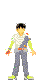
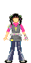
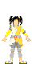

|
今年の6年生は新人2人を含め、すごくバランスの取れた6人だと思います。
キャラもかぶらず(笑)しっかり戦士として番組作りに貢献しています。
そろそろ年上キャラとしての落ち着きが見えて来る頃ですね。
一番成長が楽しみな6年生です。
以下、学年順・あいうえお順に紹介していきます。
名前…加入年度（年数）/誕生日/血液型/所属事務所 です。
小学6年生
 |
安齊 舞…1999~(4) / birth:21.Aug.1990 / B / 宝映テレビプロダクション
舞さんはすっかり貫禄も出て、本人曰く「おばさんって言われる」そうですが、可愛さは変わらずそのままです。
先日MTKクラシックで放送されましたが、福ちゃんの「たんぽぽ」のVTRがすごく好きなんです。
見てるこっちまで舞に恋しているような甘酸っぱい気持ちになります。
あの笑顔で笑ってくれると何だか許された気分になります。
気持ちがほんわかして幸せな気分にしてくれる舞は「癒し系」
（個人的にあまり好きな言葉ではないですが）そのものかもしれません。
2学期初のMTK『星の軌跡』で、さらに舞が好きになりました。かなり可愛いっす。笑顔も声も。
こういうメイクの舞さんいいですね。ナチュラルだけどちゃんとメイクしてる感じ。
エンディングで一番好きだったパート（揺れ動いてるキャンディーハート）が舞の声だと知り、嬉しいです♪
 |
井出 卓也…2001~(2) / birth:12.Mar.1991 / ? / スペースクラフトジュニア
私の中の「弟にしたいNo.1」のてれび戦士が卓也です。
一番少年らしさを感じさせてくれるのです。私の持つ少年象とすごく重なる所があるんでしょうね
卓也といえば、マクドナルドのCM良かったですよねぇ！
心から「あんな弟が欲し〜！」と思いました。「お姉ちゃ〜ん」って呼ばれたいなぁ〜(笑)。
…バカになってすみません。
見始めた当初はあんまり印象に残らなかったのですが（ごめんなさい）、
今ではかなりの卓也ファンです。（diaryを見てもらえれば分かりますが（笑）。）
やばいっす。あの笑顔に本当にメロメロです♪声も大好きです。
でも公式HPの写真がちょっと気に入ってません（笑）。
今の髪型の方が可愛いのになぁ。
ニコニコしながらも、ちゃんと人の話聞いてるし、盛り上げなきゃいけない時にはちゃんと盛り上げられるし、
周りにすごく気を配ってるし、すごく大人なのかもしれません。
明らかにヤスシな編集者イデタクもいいですよね。
声かすれさせてまで高い声でツッコむ（inイベント）卓也が大好きです。（告って終了(笑)。）
 |
ブライアン・ウォルターズ…2002~(1) / birth:30.Jul.1990 / A / シュガー＆スパイス
新加入後そうそうに、弱点を暴露されてしまったブライアン。
本人は嫌だったかもしれませんが、それから親しみが沸いた人も多いはず。（私もそうです。）
ちょっと甘えん坊な感じもするブライアンですが、イベントでは剣士の役をとてもかっこよく演じていました。
すごく意外な役でしたがハマっていたと思います。役者向きかもしれないので、
ラフィン☆スターなんかに出せばいいキャラになると思うんですけどねぇ。
甘えキャラだけでなく、 まだまだ違う顔を見せてくれそうなブライアン。
カリフォルニア生まれがかっこいいブライアン。
カラオケでバックストリートボーイズを歌うブライアン。
これからも期待しながら見ていきたいです。
 |
白木杏奈…2002~(1) / birth:19.Jun.1990 / O / 舞夢プロ
最初すごく落ち着いた子だな〜という印象だったんですが、その分、時たま見せる無邪気な笑顔が嬉しいです。
特にミラクルシューター（カメルーンチーム）はチームメイトとの相性も良く（仲間割れもしてましたが）
生き生きとした杏奈が見られたと思います。
趣味でイラストを描いてるようで、私も絵が好きなのですごく好感が持てました。
最近では他の戦士とも慣れたみたいですね。たまに冴えたツッコミも見せてくれます（笑）。
新人とはいえ、上級生として年下の戦士のお姉さん役にもなれそうです。
もっと色んな事にチャレンジする杏奈が見たいです。
 |
俵小百合…2001~(2) / birth:27.Mar.1991 / A / キリンプロ
お姉ちゃんよりお姉ちゃんらしい(笑)小百合は、最近綺麗度ますますアップですよね！
前はゆっこの方に目を奪われてましたが、今は小百合もすごく気になってます。
天ドラの小百合、かなり可愛かった！前髪流した方が好きなのかも。
キリッと綺麗な顔は、すごく憧れます。大人っぽい。
姉妹企画の時の素な小百合が面白い(笑)。そしてちょっと可愛そう(笑)。
私もかなり妹にワガママ言うので、妹キャラな子は大好きです。耐える妹よ！頑張れ！
（私の妹も日々耐えてくれてます(笑)。）
いつの世も、妹は理不尽な思いをさせられそうな宿命ですね（笑）。
姉とのコンビネーションはもう言う事ナシなんですが、小百合は結構誰とでも相性良いですよね♪
不思議調査隊の東奈とのコンビ、すごく好きでした。あっさり、さっぱりな感じ。
結構大ざっぱなとこがさすが俵姉妹！(笑)そういうとこ大好き♪
 |
松井蘭丸…2001~(2) / birth:24.Feb.1991 / A / スペースクラフトジュニア
蘭丸…面白いっすよねぇ…(笑)。
なんだか本人全然気付いてないのに面白いってのがすごい。
ただ一生懸命なんですけどね。何か笑える(笑)。めざせヘタレ返上！
卓也が二枚目キャラになりそうなこの頃、蘭丸も新キャラ発掘して欲しいっす。
もっと奥が深そうだ。彼は。
カトウがアンジャッシュ児嶋に似てるって言ったのがメチャメチャ面白かったです。
顔はそんなには似てないと思いますが、慌てキャラは似てるかも(笑)。
何だか常に焦ってる気が…蘭丸…(笑)。
顔はいいのに三枚目な蘭丸でずっと居て欲しいです。（本人は嫌がりそう…(笑)。）
このページで使わせて頂いているイラストは、「天てれ商会吉備巻堂」のBOXYさんの作品です。
この画像の無断複製及び転載は著作権法により、禁じられています。
管理人は了承を得てお借りしています。